Instal·lació i Configuració del Kernel Linux
Introducció
Aquest document descriu el procés complet d'instal·lació i configuració d'un kernel Linux personalitzat, incloent la configuració amb menuconfig i oldconfig. S'ha modificat la configuració de xarxa (IP/TCP) i s'ha afegit un missatge personalitzat que apareix durant l'arrencada del sistema.
Part 1: Configuració amb menuconfig
1.1. Descomprimir el fitxer del kernel
Aqui tenim el fitxer del kernel descomprimit.
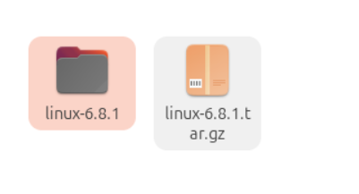
1.2. Opcions de Configuració General
Interfície principal de make menuconfig mostrant les categories de configuració del kernel.
Visualització de les opcions generals de configuració del kernel.
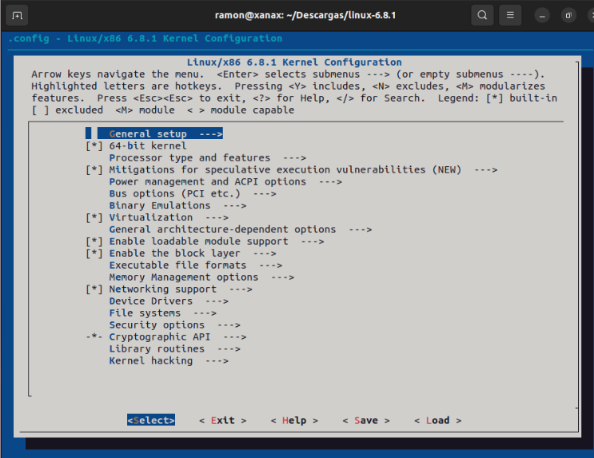
1.3. Selecció de Networking Support
Accés a la categoria Networking support per configurar les opcions de xarxa.
Dins de Networking support, visualització de les opcions disponibles.
Selecció de Networking options per configurar protocols de xarxa.
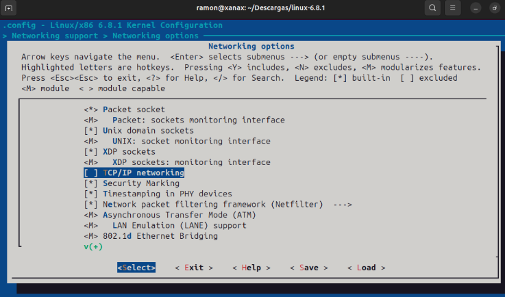
1.4. Configuració Guardada
Confirmació que la configuració s'ha escrit correctament al fitxer .config
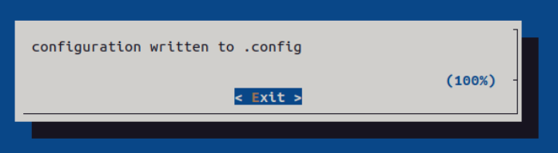
1.5. Inici de la Compilació
Execució de la comanda make per compilar el kernel.
sudo make -j$(nproc)
El procés de compilació està en curs, compilant els diferents components del kernel.
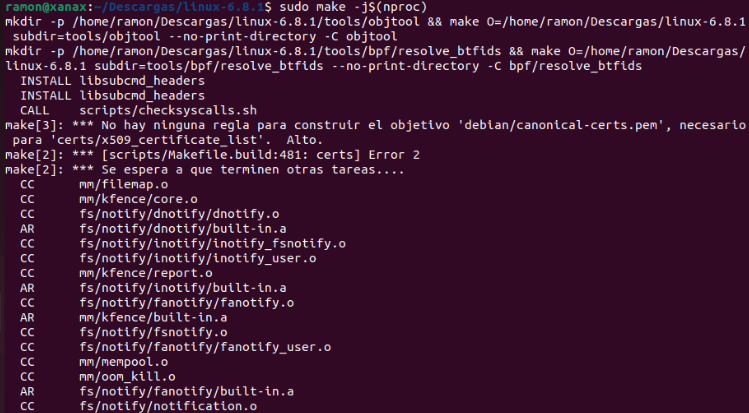
1.6. Instal·lació dels Mòduls
Instal·lació dels mòduls del kernel amb sudo make modules_install.
sudo make modules_install
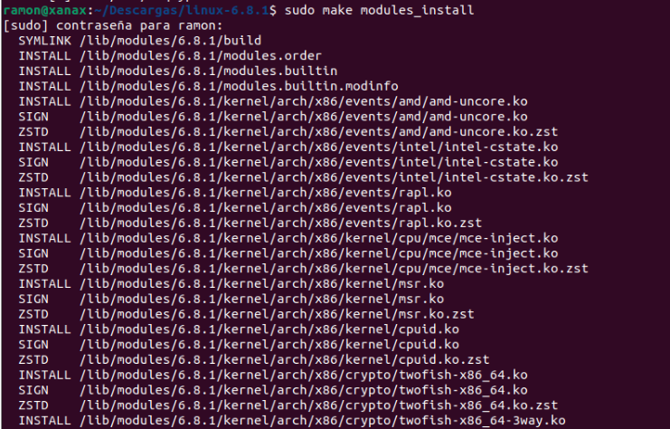
1.7. Creació del paquet del kernel
Aqui executarem la comanda sudo make bindeb-pkg per crear el paquet del kernel.
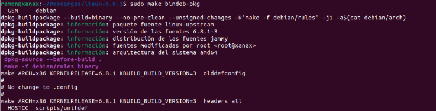
1.8. Comprovacio de que el paquet s'ha creat correctament
Amb un simple ls podem comprovar que el paquet s'ha creat correctament.
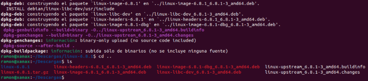
1.9. Instal·lacio del paquet del kernel
Per instal·lar el paquet del kernel, executarem la comanda sudo dpkg -i linux-image-*.debi sudo dpkg -i linux-headers-*.deb.
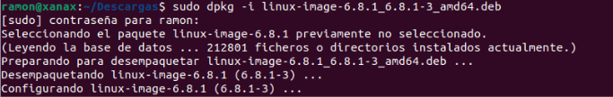
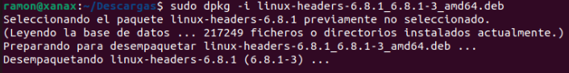
1.10. Configuracio del grub
Configurarem estes opcions per tener el menu al arrancar per elegir el kernel que vols utilitzar.
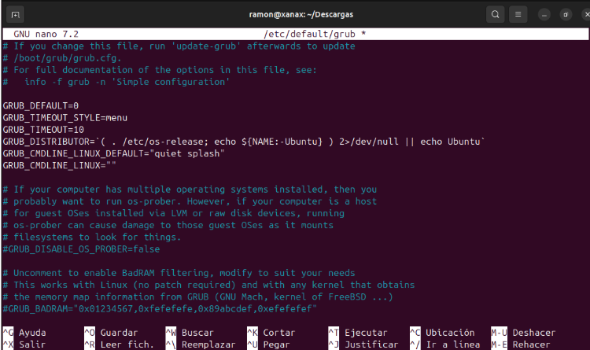
1.11. Update GRUB
Executarem la comanda sudo update-grub per actualitzar el GRUB.
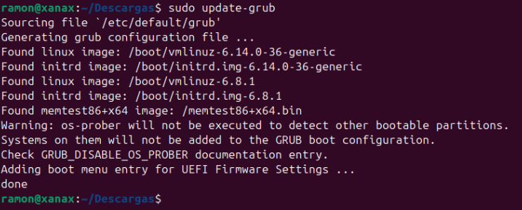
1.12. Arrencada del sistema amb el nou kernel
Arrencarem el sistema amb el nou kernel.
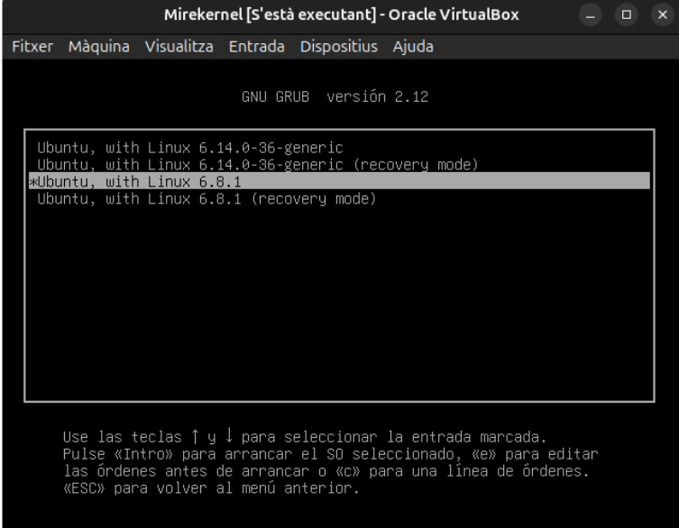
1.13. Comprovacio final
Com podem veure no tenim acces a la part de xarxa que habiem desactivat en el menuconfig.
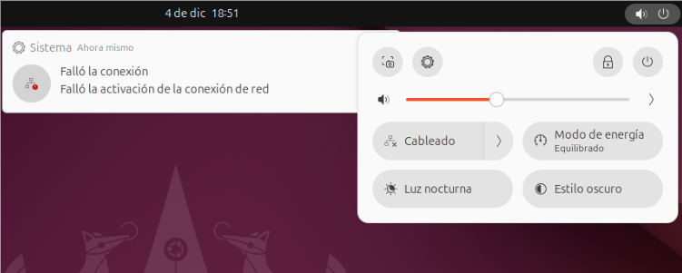
Part 2: Configuracio amb oldconfig
2.1. Paquets al source-list
Afegirem els paquets necessaris per a la configuracio amb oldconfig.
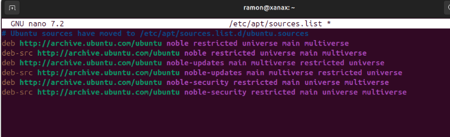
2.2. Copia del fitxer main.c
Copiem el fitxer main.c per a poder-lo modificar sense perdre el fitxer original.
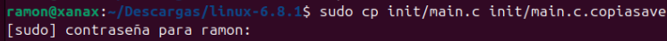
2.3. Comprovacio de que el fitxer s'ha copiat correctament
Amb un simple ls podem comprovar que el fitxer s'ha copiat correctament.
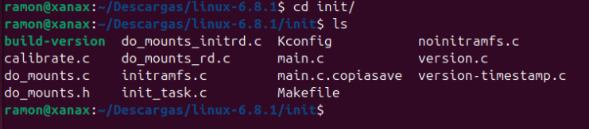
2.4. Modificacio del fitxer main.c
Modifiquem el fitxer main.c per a afegir el missatge personalitzat.
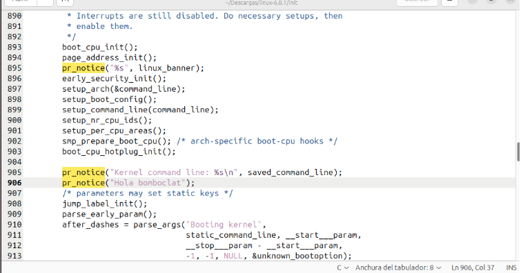
2.5. Comprovacio de que el fitxer s'ha modificat correctament
Amb un simple grep podem comprovar que el fitxer s'ha modificat correctament.
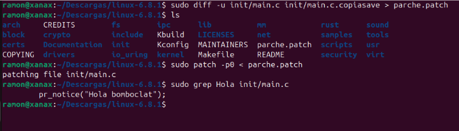
2.6. Còpia de la configuració del kernel actual
Copiem la configuració del kernel actual del sistema al fitxer .config per utilitzar-la com a base:
sudo cp /boot/config-6.14.0-36-generic .config
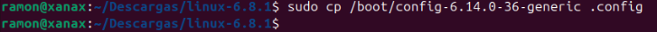
2.7. Execució de make oldconfig
Executem make oldconfig per aplicar la configuració anterior al codi font modificat:
make oldconfig
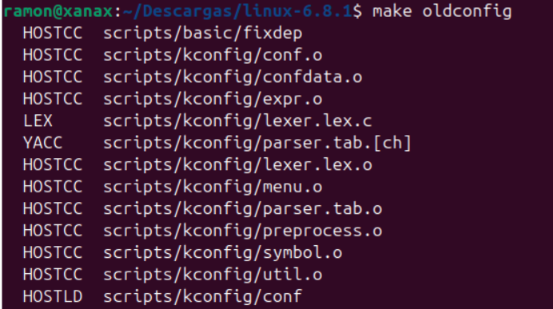
2.8. Procés d'oldconfig en curs
El procés d'oldconfig està aplicant la configuració i preguntant per noves opcions si n'hi ha.
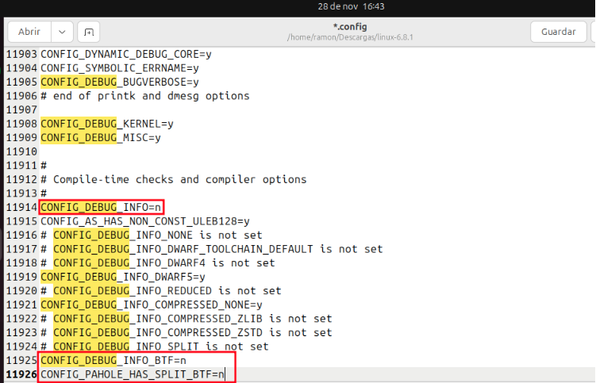
2.9. Compilació del kernel modificat
Iniciem la compilació del kernel amb el missatge personalitzat afegit:
sudo make -j$(nproc)
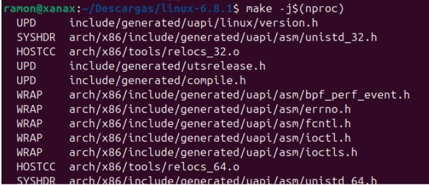
2.10. Procés de compilació
El procés de compilació està en curs, compilant el kernel amb les modificacions.
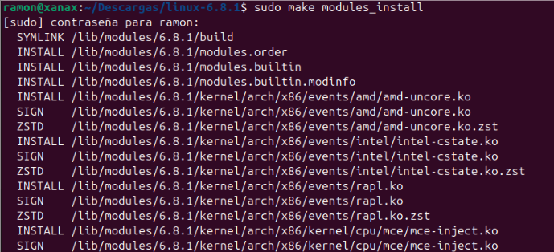
2.11. Continuació de la compilació
Continuació del procés de compilació del kernel modificat.
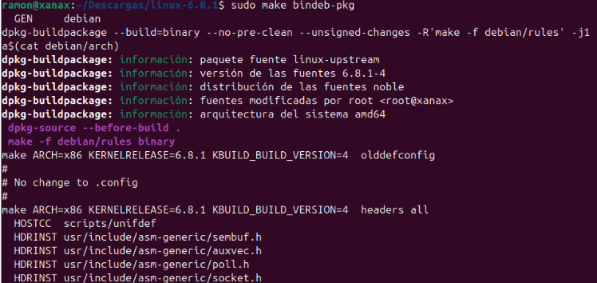
2.12. Creació del paquet Debian
Creació del paquet .deb del kernel compilat amb make bindeb-pkg:
sudo make bindeb-pkg
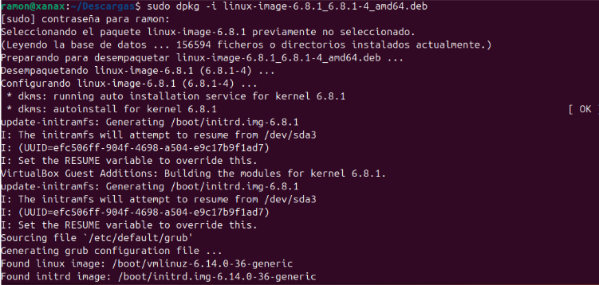
2.13. Verificació dels paquets creats
Comprovem amb ls que els paquets .deb s'han creat correctament.
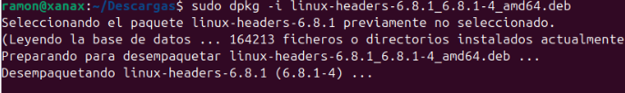
2.14. Instal·lació dels paquets del kernel
Instal·lem els paquets del kernel i els headers:
sudo dpkg -i linux-image-*.deb
sudo dpkg -i linux-headers-*.deb
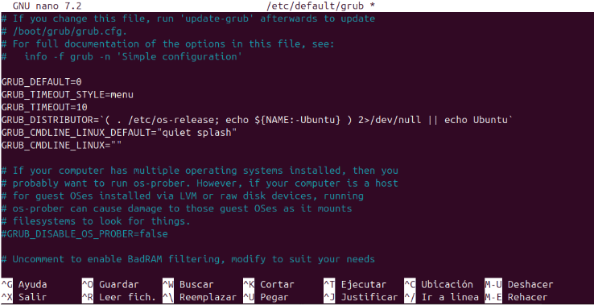
2.15. Actualització del GRUB
Actualitzem el GRUB per incloure el nou kernel:
sudo update-grub
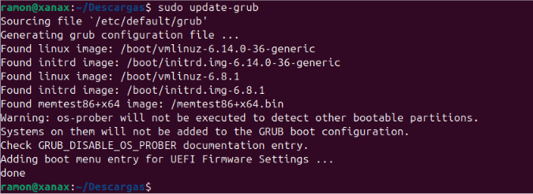
2.16. Reinici del sistema
Reiniciem el sistema per arrencar amb el nou kernel modificat:
sudo reboot
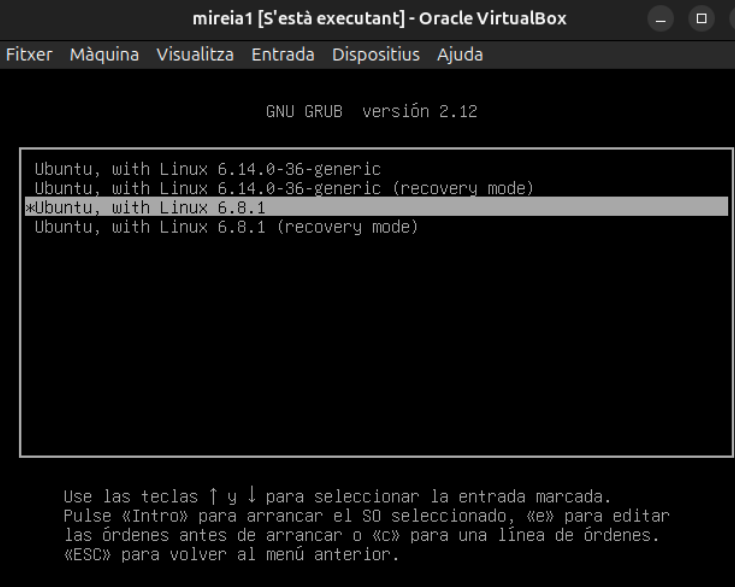
2.17. Verificació del missatge personalitzat
Durant l'arrencada del sistema, podem veure el missatge personalitzat que hem afegit amb printk() al codi del kernel.
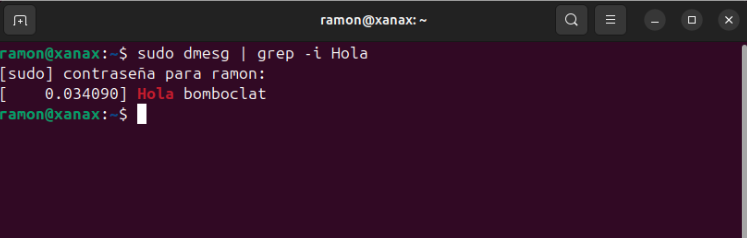